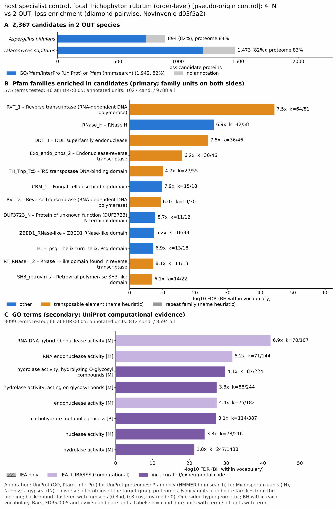

yc pseudo dermatophyte: functional enrichment (loss)
One-sided hypergeometric test per term; Benjamini-Hochberg FDR within each scope, level and vocabulary. Candidates are the loss candidates: gene families present in the OUT group and absent from the IN group. Universe: proteome. Background clustered: True (20662 sequences in 12690 clusters, mmseqs easy-cluster --min-seq-id 0.3 -c 0.8). Family level: one unit per candidate family and per background cluster.
Sources: Pfam: 2026-01-27-Pfam38.2; InterPro entries: 110.0; GO: releases/2026-07-26; analysis generated 2026-10-24T14:52:54. Source tables: /bigdata/stajichlab/jstajich/projects/NovInvenio_Investigations/studies/fungi/yeast_convergence/yc_pseudo_dermatophyte/analysis/enrichment/outputs/loss/proteome_clustered.
Full record: PROVENANCE. Run report: report.html.
- Annotation provenance is not fully recorded: PROVENANCE.yaml lists the per-species annotation files and their checksums, but not the UniProt release they come from.
- GO results are secondary. GO annotations include computational evidence (IEA, IBA); the GO evidence column shows if a term has non-IEA support.
- Candidate families (pipeline clustering of candidates) and background clusters (mmseqs clustering of the background proteome) are made by different runs, so family-level counts are not fully comparable.
Summary figure

Annotation coverage
Fraction of proteins with at least one term per vocabulary. Universe = all proteins of the species; candidates = the candidate set.
| Species | Set | Proteins | Pfam | Pfam clan | InterPro | GO | Any |
|---|---|---|---|---|---|---|---|
| Anid | universe | 10561 | 78.2% | 64.8% | 83.1% | 71.4% | 83.7% |
| Anid | candidates | 894 | 72.5% | 64.0% | 81.4% | 59.8% | 82.2% |
| Talastip | universe | 12468 | 76.4% | 64.1% | 82.5% | 67.4% | 82.8% |
| Talastip | candidates | 1473 | 73.4% | 67.6% | 81.5% | 60.4% | 81.9% |
| ALL_OUT | universe | 23029 | 77.2% | 64.4% | 82.8% | 69.2% | 83.2% |
| ALL_OUT | candidates | 2367 | 73.0% | 66.2% | 81.5% | 60.2% | 82.0% |
Tests summary
Per vocabulary: terms with FDR < 0.05 / terms tested. Protein level counts proteins; family level counts candidate families and background clusters.
| Scope | Level | Cand. units | Pfam sig / tested | Pfam clan sig / tested | InterPro sig / tested | GO sig / tested |
|---|---|---|---|---|---|---|
| whole_set | family | 1504 | 46 / 575 | 20 / 282 | 86 / 1255 | 66 / 3099 |
| whole_set | protein | 2367 | 94 / 1071 | 30 / 360 | 187 / 2342 | 125 / 4060 |
| Anid | family | 766 | 15 / 350 | 17 / 244 | 45 / 842 | 58 / 2716 |
| Anid | protein | 894 | 35 / 464 | 19 / 256 | 75 / 1090 | 75 / 2883 |
| Talastip | family | 1055 | 24 / 411 | 15 / 252 | 49 / 943 | 62 / 2535 |
| Talastip | protein | 1473 | 36 / 517 | 16 / 266 | 70 / 1176 | 78 / 2737 |
Top 25 Pfam terms (whole set, family level)
25 rows shown, ordered by FDR then p-value; 25 have FDR < 0.05 (bold). 11 are tagged TE: transposable-element families, flagged by name (heuristic, not a test).
| Term | Name | k / N cand. | n / M bg | Fold | FDR (BH) |
|---|---|---|---|---|---|
| PF00078 | RVT_1: Reverse transcriptase (RNA-dependent DNA polymerase) TE | 64 / 1027 | 81 / 9788 | 7.53 | 4.63e-45 |
| PF00075 | RNase_H: RNase H | 42 / 1027 | 58 / 9788 | 6.902 | 1.53e-26 |
| PF03184 | DDE_1: DDE superfamily endonuclease TE | 36 / 1027 | 46 / 9788 | 7.459 | 8.93e-25 |
| PF14529 | Exo_endo_phos_2: Endonuclease-reverse transcriptase TE | 30 / 1027 | 46 / 9788 | 6.216 | 7.77e-17 |
| PF03221 | HTH_Tnp_Tc5: Tc5 transposase DNA-binding domain TE | 27 / 1027 | 55 / 9788 | 4.679 | 6.44e-11 |
| PF00734 | CBM_1: Fungal cellulose binding domain | 15 / 1027 | 18 / 9788 | 7.942 | 1.08e-10 |
| PF07727 | RVT_2: Reverse transcriptase (RNA-dependent DNA polymerase) TE | 19 / 1027 | 30 / 9788 | 6.036 | 3.10e-10 |
| PF29418 | DUF3723_N: Protein of unknown function (DUF3723) N-terminal domain | 11 / 1027 | 12 / 9788 | 8.736 | 1.26e-08 |
| PF27041 | ZBED1_RNase-like: ZBED1 RNase-like domain | 18 / 1027 | 33 / 9788 | 5.199 | 2.95e-08 |
| PF05225 | HTH_psq: helix-turn-helix, Psq domain | 13 / 1027 | 18 / 9788 | 6.883 | 5.18e-08 |
| PF17919 | RT_RNaseH_2: RNase H-like domain found in reverse transcriptase TE | 11 / 1027 | 13 / 9788 | 8.064 | 5.40e-08 |
| PF25597 | SH3_retrovirus: Retroviral polymerase SH3-like domain TE | 14 / 1027 | 22 / 9788 | 6.065 | 1.23e-07 |
| PF00665 | rve: Integrase core domain TE | 8 / 1027 | 8 / 9788 | 9.531 | 6.08e-07 |
| PF24626 | SH3_Tf2-1: Tf2-1-like, SH3 domain | 11 / 1027 | 15 / 9788 | 6.989 | 6.08e-07 |
| PF12520 | DUF3723: Protein of unknown function (DUF3723) central domain | 10 / 1027 | 13 / 9788 | 7.331 | 1.27e-06 |
| PF30863 | PRO_PEG10-RTL1: PEG10/RTL1 protease domain TE | 9 / 1027 | 11 / 9788 | 7.798 | 2.43e-06 |
| PF16499 | Melibiase_2: Alpha galactosidase A | 7 / 1027 | 7 / 9788 | 9.531 | 4.65e-06 |
| PF00657 | Lipase_GDSL: GDSL-like Lipase/Acylhydrolase | 7 / 1027 | 8 / 9788 | 8.339 | 3.19e-05 |
| PF00295 | Glyco_hydro_28: Glycosyl hydrolases family 28 | 6 / 1027 | 6 / 9788 | 9.531 | 3.79e-05 |
| PF12051 | DUF3533: Protein of unknown function (DUF3533) | 6 / 1027 | 6 / 9788 | 9.531 | 3.79e-05 |
| PF17921 | Integrase_H2C2: Integrase zinc binding domain TE | 9 / 1027 | 14 / 9788 | 6.127 | 5.01e-05 |
| PF17390 | Bac_rhamnosid_C: Bacterial alpha-L-rhamnosidase C-terminal domain | 7 / 1027 | 9 / 9788 | 7.413 | 1.07e-04 |
| PF17917 | RT_RNaseH: RNase H-like domain found in reverse transcriptase TE | 7 / 1027 | 10 / 9788 | 6.671 | 2.59e-04 |
| PF00251 | Glyco_hydro_32N: Glycosyl hydrolases family 32 N-terminal domain | 5 / 1027 | 5 / 9788 | 9.531 | 2.59e-04 |
| PF08244 | Glyco_hydro_32C: Glycosyl hydrolases family 32 C terminal | 5 / 1027 | 5 / 9788 | 9.531 | 2.59e-04 |
Top 25 InterPro terms (whole set, family level)
25 rows shown, ordered by FDR then p-value; 25 have FDR < 0.05 (bold).
| Term | Name | k / N cand. | n / M bg | Fold | FDR (BH) |
|---|---|---|---|---|---|
| IPR036397 | Homologous_superfamily:Ribonuclease H superfamily | 111 / 1173 | 210 / 10727 | 4.834 | 4.17e-49 |
| IPR043502 | Homologous_superfamily:DNA/RNA polymerase superfamily | 79 / 1173 | 110 / 10727 | 6.568 | 5.18e-49 |
| IPR000477 | Domain:Reverse transcriptase domain | 64 / 1173 | 83 / 10727 | 7.052 | 8.77e-43 |
| IPR012337 | Homologous_superfamily:Ribonuclease H-like superfamily | 109 / 1173 | 231 / 10727 | 4.315 | 1.76e-42 |
| IPR002156 | Domain:Ribonuclease H domain | 43 / 1173 | 63 / 10727 | 6.242 | 8.89e-25 |
| IPR004875 | Domain:DDE superfamily endonuclease domain | 36 / 1173 | 46 / 10727 | 7.157 | 4.40e-24 |
| IPR050863 | Family:Centromere and Transposable Element-Derived Protein | 27 / 1173 | 36 / 10727 | 6.859 | 5.40e-17 |
| IPR036691 | Homologous_superfamily:Endonuclease/exonuclease/phosphatase superfamily | 38 / 1173 | 73 / 10727 | 4.76 | 4.94e-16 |
| IPR005135 | Domain:Endonuclease/exonuclease/phosphatase | 32 / 1173 | 54 / 10727 | 5.419 | 1.18e-15 |
| IPR043128 | Homologous_superfamily:Reverse transcriptase/Diguanylate cyclase domain | 25 / 1173 | 34 / 10727 | 6.724 | 1.84e-15 |
| IPR001584 | Domain:Integrase, catalytic core | 27 / 1173 | 43 / 10727 | 5.742 | 4.52e-14 |
| IPR006600 | Domain:HTH CenpB-type DNA-binding domain | 29 / 1173 | 58 / 10727 | 4.572 | 1.30e-11 |
| IPR017853 | Homologous_superfamily:Glycoside hydrolase superfamily | 47 / 1173 | 140 / 10727 | 3.07 | 4.93e-11 |
| IPR023296 | Homologous_superfamily:Glycosyl hydrolase, five-bladed beta-propeller domain superfamily | 19 / 1173 | 28 / 10727 | 6.205 | 1.12e-10 |
| IPR000254 | Domain:Cellulose-binding domain | 15 / 1173 | 18 / 10727 | 7.621 | 1.75e-10 |
| IPR013103 | Domain:Reverse transcriptase, RNA-dependent DNA polymerase | 19 / 1173 | 30 / 10727 | 5.792 | 6.27e-10 |
| IPR035971 | Homologous_superfamily:Cellulose-binding domain superfamily | 14 / 1173 | 17 / 10727 | 7.531 | 1.19e-09 |
| IPR062922 | Domain:Domain of unknown function (DUF3723), N-terminal domain | 11 / 1173 | 12 / 10727 | 8.383 | 1.93e-08 |
| IPR041577 | Domain:Reverse transcriptase/retrotransposon-derived protein, RNase H-like domain | 11 / 1173 | 13 / 10727 | 7.738 | 1.07e-07 |
| IPR007889 | Domain:DNA binding HTH domain, Psq-type | 13 / 1173 | 19 / 10727 | 6.257 | 2.66e-07 |
| IPR057670 | Domain:Retroviral polymerase, SH3-like domain | 14 / 1173 | 22 / 10727 | 5.819 | 2.66e-07 |
| IPR039537 | Family:Retrotransposon Ty1/copia-like | 12 / 1173 | 17 / 10727 | 6.455 | 5.80e-07 |
| IPR013320 | Homologous_superfamily:Concanavalin A-like lectin/glucanase domain superfamily | 21 / 1173 | 50 / 10727 | 3.841 | 8.89e-07 |
| IPR056924 | Domain:Tf2-1-like, SH3-like domain | 11 / 1173 | 15 / 10727 | 6.706 | 1.20e-06 |
| IPR022198 | Domain:Domain of unknown function DUF3723 | 10 / 1173 | 13 / 10727 | 7.035 | 2.48e-06 |
Top 15 GO terms (whole set, family level) — secondary, computational evidence (IEA/IBA) included
15 rows shown, ordered by FDR then p-value; 15 have FDR < 0.05 (bold).
| Term | Name | k / N cand. | n / M bg | Fold | FDR (BH) | GO evidence | Families with non-IEA |
|---|---|---|---|---|---|---|---|
| GO:0004523 | molecular_function:RNA-DNA hybrid ribonuclease activity | 70 / 812 | 107 / 8594 | 6.924 | 9.68e-43 | has_non_IEA | 2 |
| GO:0016891 | molecular_function:RNA endonuclease activity producing 5'-phosphomonoesters, hydrolytic mechanism | 70 / 812 | 123 / 8594 | 6.023 | 3.65e-37 | has_non_IEA | 2 |
| GO:0004521 | molecular_function:RNA endonuclease activity | 71 / 812 | 144 / 8594 | 5.218 | 2.16e-32 | has_non_IEA | 2 |
| GO:0004553 | molecular_function:hydrolase activity, hydrolyzing O-glycosyl compounds | 87 / 812 | 224 / 8594 | 4.111 | 2.03e-30 | has_non_IEA | 33 |
| GO:0004540 | molecular_function:RNA nuclease activity | 71 / 812 | 160 / 8594 | 4.697 | 7.01e-29 | has_non_IEA | 2 |
| GO:0016798 | molecular_function:hydrolase activity, acting on glycosyl bonds | 88 / 812 | 244 / 8594 | 3.817 | 3.76e-28 | has_non_IEA | 33 |
| GO:0004519 | molecular_function:endonuclease activity | 75 / 812 | 182 / 8594 | 4.361 | 3.76e-28 | has_non_IEA | 2 |
| GO:0005975 | biological_process:carbohydrate metabolic process | 114 / 812 | 387 / 8594 | 3.118 | 5.89e-28 | has_non_IEA | 46 |
| GO:0004518 | molecular_function:nuclease activity | 78 / 812 | 216 / 8594 | 3.822 | 7.01e-25 | has_non_IEA | 3 |
| GO:0016787 | molecular_function:hydrolase activity | 247 / 812 | 1438 / 8594 | 1.818 | 4.50e-22 | has_non_IEA | 67 |
| GO:0015074 | biological_process:DNA integration | 35 / 812 | 54 / 8594 | 6.86 | 6.25e-21 | IEA_only | 0 |
| GO:0000272 | biological_process:polysaccharide catabolic process | 45 / 812 | 91 / 8594 | 5.234 | 1.94e-20 | has_non_IEA | 30 |
| GO:0016052 | biological_process:carbohydrate catabolic process | 60 / 812 | 158 / 8594 | 4.019 | 3.28e-20 | has_non_IEA | 38 |
| GO:0016788 | molecular_function:hydrolase activity, acting on ester bonds | 119 / 812 | 504 / 8594 | 2.499 | 4.10e-20 | has_non_IEA | 23 |
| GO:0005976 | biological_process:polysaccharide metabolic process | 52 / 812 | 124 / 8594 | 4.438 | 9.91e-20 | has_non_IEA | 36 |
Actin cytoskeleton controls
Known actin-related families and how many of their proteins pass each filter. Protein ID columns are left out.
| control | pfam_ids | desc_regex | OUT_universe | OUT_in_matrix | OUT_pass_outgroup_rule | candidates | near_miss_in1 | near_miss_in2 | n_Anid | n_Talastip | n_Tricrubr | n_Micrcani | n_Tricinte | n_Nanngyps |
|---|---|---|---|---|---|---|---|---|---|---|---|---|---|---|
| Arp2/3 ARPC2 (P34-Arc) | PF04045 | 2 | 2 | 2 | 0 | 0 | 0 | 1 | 1 | 1 | 1 | 1 | 1 | |
| Arp2/3 ARPC3 (P21-Arc) | PF04062 | 2 | 2 | 2 | 0 | 0 | 0 | 1 | 1 | 1 | 1 | 1 | 1 | |
| Arp2/3 ARPC4 | PF05856 | 2 | 2 | 2 | 0 | 0 | 0 | 1 | 1 | 1 | 1 | 1 | 1 | |
| Arp2/3 ARPC5 (P16-Arc) | PF04699 | 2 | 2 | 2 | 0 | 0 | 0 | 1 | 1 | 1 | 1 | 1 | 1 | |
| Arp2/3 ARPC1 (description only) | arp2/3 complex.*(41|p41|subunit 1)|ARPC1 | 0 | 0 | 0 | 0 | 0 | 0 | 0 | 0 | 0 | 0 | 0 | 0 | |
| Arp2 / Arp3 (description only) | actin-related protein (2|3)\b|\bARP[23]\b | 15 | 15 | 15 | 0 | 0 | 0 | 7 | 8 | 5 | 0 | 7 | 0 | |
| WAVE complex NCKAP1 | PF09735 | 0 | 0 | 0 | 0 | 0 | 0 | 0 | 0 | 0 | 0 | 0 | 0 | |
| WAVE complex CYFIP (FragX_IP) | PF05994 | 0 | 0 | 0 | 0 | 0 | 0 | 0 | 0 | 0 | 0 | 0 | 0 | |
| WAVE complex ABI | PF07815|PF27594 | 0 | 0 | 0 | 0 | 0 | 0 | 0 | 0 | 0 | 0 | 0 | 0 | |
| SCAR/WAVE (SCAR_helical) | PF27569 | 0 | 0 | 0 | 0 | 0 | 0 | 0 | 0 | 0 | 0 | 0 | 0 | |
| WASP family (WH1) | PF00568 | 2 | 2 | 2 | 0 | 0 | 0 | 1 | 1 | 1 | 1 | 1 | 1 | |
| WH2 motif (WASP, WAVE, others) | PF02205 | 5 | 5 | 5 | 0 | 0 | 0 | 3 | 2 | 2 | 2 | 2 | 2 | |
| Formin FH2 | PF02181 | 2 | 2 | 2 | 0 | 0 | 0 | 1 | 1 | 1 | 1 | 1 | 1 | |
| Formin Drf_GBD / Drf_FH3 / Drf_DAD | PF06371|PF06367|PF06345 | 4 | 4 | 4 | 0 | 0 | 0 | 2 | 2 | 1 | 2 | 2 | 2 | |
| Ena/VASP (VASP_tetra) | PF08776 | 0 | 0 | 0 | 0 | 0 | 0 | 0 | 0 | 0 | 0 | 0 | 0 | |
| Coronin (description only) | coronin | 2 | 2 | 2 | 0 | 0 | 0 | 1 | 1 | 1 | 0 | 1 | 0 | |
| Cortactin (HS1_rep) | PF02218 | 0 | 0 | 0 | 0 | 0 | 0 | 0 | 0 | 0 | 0 | 0 | 0 | |
| Myosin 2 tail (Myosin_tail_1) | PF01576 | 0 | 0 | 0 | 0 | 0 | 0 | 0 | 0 | 0 | 0 | 0 | 0 | |
| Myosin head (all myosins) | PF00063 | 10 | 10 | 10 | 0 | 0 | 0 | 5 | 5 | 4 | 4 | 4 | 4 |
Page written by bin/generate_enrichment_page.py.